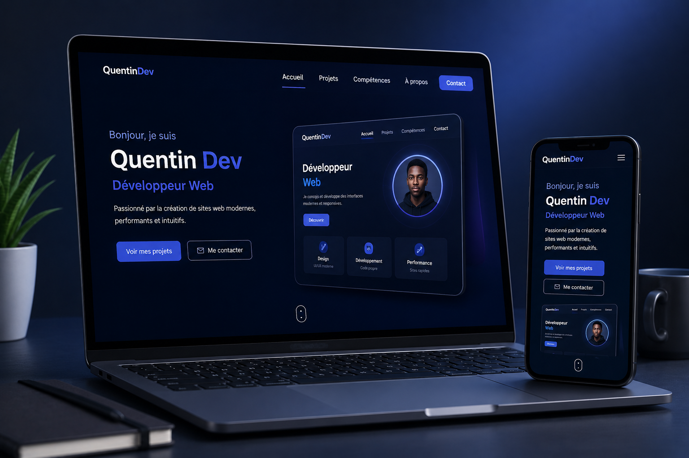

Ce portfolio est conçu pour présenter mon parcours, mes compétences, mes projets et permettre aux visiteurs de me contacter facilement grâce à une interface moderne.
Retour aux projets
Présentation du portfolio
Créer un portfolio professionnel pour présenter mon profil, mes compétences et mes réalisations.
Interface moderne avec Glassmorphism, animations, dégradés, effets lumineux et responsive design.
Le site s'adapte parfaitement aux ordinateurs, tablettes et smartphones.
Développement du site
✔ HTML5
✔ CSS3
✔ JavaScript ES6
✔ Font Awesome
✔ Animations CSS
✔ Menu responsive
✔ Défilement fluide
✔ Bouton retour en haut
✔ Loader animé
Ce que propose le site
Chaque projet possède une page dédiée avec sa description, ses objectifs et les technologies utilisées.
Les visiteurs peuvent facilement me contacter grâce au formulaire et aux liens vers mes réseaux sociaux.
Un portfolio moderne, élégant et professionnel qui met en valeur mes compétences.